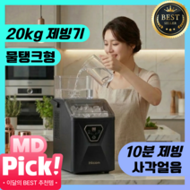
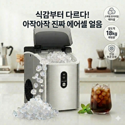
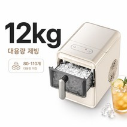
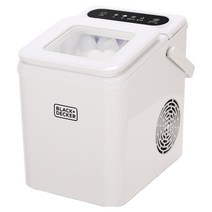
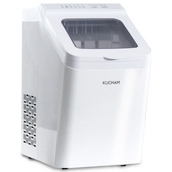

가정용 아이스메이커 추천 2026 — 큐브형부터 너겟형까지 5가지 비교
작년 여름 얘기를 먼저 해드릴게요. 손님이 갑자기 오셔서 냉커피를 한꺼번에 여섯 잔 만들어야 했는데, 냉장고 얼음칸을 다 털어도 두 잔분이 간신히 나왔어요. 결국 편의점에서 봉지 얼음을 사 왔고, 그날 밤 바로 아이스메이커를 검색하기 시작했습니다.
그런데 막상 검색해보면 제빙기 종류가 생각보다 많고, 큐브형인지 너겟형인지, 용량이 얼마인지, 물탱크 급수인지 자동 급수인지에 따라 용도가 완전히 달라져요. 모델만 나열한 글이 많아서 실제로 뭘 사야 하는지 감이 안 오더라고요.
이번 글에서는 용도별로 맞는 제빙기가 뭔지, 큐브형과 너겟형의 실제 차이, 용량 계산법까지 정리했습니다. 5가지 제품을 직접 비교해서 어느 상황에 어느 걸 사야 하는지 명확하게 알려드릴게요.
5초 요약 — 용도별 아이스메이커 추천
복잡한 거 다 빼고 용도별로 정리하면 이렇게 나옵니다.
| 용도 | 추천 모델 | 가격 |
|---|---|---|
| 사무실·소규모 음료 (가성비 큐브) | 큐빙 사각얼음 제빙기 | 187,900원 |
| 씹어먹는 얼음·카페 스타일 | 에어셀 아이스 2026 너겟형 | 369,000원 |
| 소형 가성비 (1~2인 가구) | 가정용 미니 제빙기 9구 12kg | 173,990원 |
| 캠핑·차량 겸용 빠른 제빙 | 블랙앤데커 BXEM1260-A | 129,000원 |
| 대가족·캠핑·업소 겸용 | 쿠참 올스텐 자동세척 17kg | 299,000원 |
이 표만 보고 가셔도 됩니다. 더 자세한 근거가 궁금하시면 아래로 내려가시면 돼요.
큐브형 vs 너겟형, 뭐가 다를까요
아이스메이커를 처음 사는 분들이 가장 헷갈리는 부분이에요. 두 종류는 만들어내는 얼음 모양과 쓰임새가 완전히 다릅니다.
큐브형 얼음
냉장고에서 나오는 그 얼음이에요. 딱딱하고 투명하거나 반투명한 사각 얼음.
- 음료에 넣으면 천천히 녹아서 희석이 덜 됩니다
- 위스키·맥주·탄산음료처럼 희석을 원하지 않는 음료에 적합
- 제빙 속도가 상대적으로 빠르고 전력 소비가 낮음
- 일반 가정용, 사무실, 손님 접대용에 어울림
너겟형 얼음 (Nugget Ice)
최근 카페에서 자주 보이는 작고 부드러운 얼음이에요. 쉽게 씹히는 게 특징.
- 씹어먹는 맛이 있어서 아메리카노, 스무디, 버블티에 잘 맞음
- 온도를 빠르게 낮추는 효과가 큼 (표면적이 넓음)
- 제빙 과정이 더 복잡해서 가격대가 높음
- 카페 창업, 홈카페 트렌드와 함께 수요가 급증 중
어떤 걸 골라야 하나요? 그냥 음료에 얼음 넣는 용도라면 큐브형으로 충분합니다. 카페처럼 쓰거나 씹는 얼음을 좋아하신다면 너겟형이 맞아요.
아이스메이커 선택 가이드 — 구매 전 확인할 3가지
1. 일일 생산량: 몇 kg이 필요한가
| 사용 상황 | 필요 일일 생산량 |
|---|---|
| 1~2인 가구, 가끔 사용 | 8~12kg |
| 3~4인 가구, 매일 사용 | 12~15kg |
| 손님 접대 잦거나 홈카페 | 15~20kg 이상 |
| 소규모 카페·사무실 | 20kg 이상 |
가정에서는 12~15kg 정도면 충분합니다.
2. 급수 방식: 물탱크 vs 자동 급수
- 물탱크 방식: 직접 물을 채워야 함. 이동이 자유롭고 설치가 간단. 캠핑에도 활용 가능.
- 자동 급수 방식: 정수기나 수도에 연결해서 물이 자동 공급. 한 번 설치하면 편리하지만 위치가 고정됨.
이동하면서 쓸 계획이 있다면 물탱크 방식이 더 실용적입니다.
3. 소비전력과 전기요금
대부분의 가정용 아이스메이커는 100~200W 수준입니다. 하루 8시간 가동 기준으로 월 2~5만 원 정도의 전기요금이 추가될 수 있어요. 필요할 때만 켜는 방식으로 쓰면 실제 전기요금은 카탈로그 수치보다 적게 나옵니다.
제빙기 추천 1위 — 큐빙 사각얼음 제빙기 물탱크급수 가정용

- 가격: 187,900원 (정가 197,900원)
- 얼음 형태: 사각 큐브형
- 급수 방식: 물탱크 (이동 자유)
- 주요 특징: 가정용 설계, 물탱크 직접 급수, 사각얼음 대량 생산
큐빙 사각얼음 제빙기는 물탱크 급수 방식이라 정수기 연결 없이 어디서든 쓸 수 있는 게 핵심이에요. 주방에 놓고 쓸 수도 있고, 여름에 캠핑장에 들고 가서 캠핑카나 전기 연결 텐트에서도 사용 가능합니다.
사각얼음이라 희석 속도가 느려서 아이스 아메리카노, 아이스티, 칵테일 등 음료 본연의 맛을 유지하고 싶을 때 딱 맞아요.
장점: 물탱크 방식으로 설치 장소 제약 없음 / 사각얼음으로 희석이 느려 음료 맛 유지
단점: 물탱크를 주기적으로 채워야 하는 번거로움 / 너겟형 대비 씹는 식감 없음
→ 쿠팡 최저가 보기제빙기 추천 2위 — 에어셀 아이스 2026 프리미엄 너겟형

- 가격: 369,000원 (정가 389,000원, 26% 할인)
- 얼음 형태: 너겟형 (에어셀 방식)
- 급수 방식: 물탱크
- 주요 특징: 2026 프리미엄 너겟형, 부드럽고 씹히는 얼음, 홈카페용
너겟형 제빙기 중에서 2026년 신형 모델입니다. 에어셀 방식으로 만들어지는 너겟 얼음은 카페에서 주는 그 얼음이에요. 아메리카노, 스무디, 버블티를 집에서 카페 수준으로 만들고 싶은 분들한테 딱입니다.
너겟형이라 얼음 표면적이 크고 음료 온도를 빠르게 낮춰줘요. 여름에 퇴근 후 아이스 아메리카노 한 잔 집에서 뽑아 마시는 루틴이 있다면 이 제품 하나면 완성입니다.
장점: 카페용 너겟 얼음 구현 / 씹히는 식감이 좋아 만족도 높음 / 2026 신형 모델
단점: 큐브형 대비 높은 가격 (369,000원) / 너겟 얼음은 상대적으로 녹는 속도가 빠름
→ 쿠팡 최저가 보기제빙기 추천 3위 — 가정용 미니 제빙기 9구 12kg (가성비 최고)

- 가격: 173,990원 (정가 699,990원, 75% 할인)
- 얼음 형태: 큐브형 (9구)
- 일일 생산량: 약 12kg
- 주요 특징: 소형·경량, 1~2인 가구 최적, 9구 동시 제빙
이 제품은 가격 대비 성능 비율이 가장 좋습니다. 정가 699,990원짜리가 75% 할인돼 173,990원이에요. 소형 미니 제빙기로 1~2인 가구나 소규모 사무실에서 쓰기에 충분한 일일 12kg 생산량을 갖추고 있습니다.
9구 동시 제빙 방식이라 한 사이클에 9개의 얼음을 동시에 만들어요. 빠른 제빙이 필요하고 공간도 많이 차지하지 않는 걸 원하는 분들한테 맞습니다.
장점: 현재 가성비 최강 (75% 할인가 173,990원) / 소형으로 주방 공간 절약 / 1~2인 가구에 충분한 용량
단점: 대가족 사용 시 생산량 부족할 수 있음 / 향후 가격 변동 가능성
→ 쿠팡 최저가 보기제빙기 추천 4위 — 블랙앤데커 급속 제빙기 BXEM1260-A

- 가격: 129,000원
- 얼음 형태: 큐브형
- 브랜드: 블랙앤데커 (Black+Decker, 미국 브랜드)
- 주요 특징: 급속 제빙, 글로벌 가전 브랜드, 컴팩트 디자인
블랙앤데커는 미국의 유명 가전·공구 브랜드예요. 가격이 129,000원으로 5개 중 가장 저렴하면서도 글로벌 브랜드의 품질 관리를 믿을 수 있다는 게 장점입니다.
급속 제빙 기능이 있어서 얼음이 빨리 필요한 상황에 유용해요. 컴팩트한 디자인이라 주방 카운터에 올려두거나 캠핑 트렁크에 넣어 가기에도 부담이 없습니다.
장점: 5개 중 최저가 (129,000원) / 글로벌 브랜드 품질 신뢰 / 급속 제빙 / 컴팩트 디자인
단점: 국내 브랜드 대비 AS 접근성 다소 낮을 수 있음 / 너겟형 미지원
→ 쿠팡 최저가 보기제빙기 추천 5위 — 쿠참 올스텐 자동세척 가정용 17kg

- 가격: 299,000원 (정가 399,000원, 25% 할인)
- 얼음 형태: 큐브형
- 일일 생산량: 17kg
- 소재: 올스텐 (전 스테인리스 내부)
- 주요 특징: 자동세척 기능, 가정·캠핑·업소 겸용, 대용량
이 제품의 핵심은 두 가지입니다. 올스텐 내부 소재와 자동세척 기능.
제빙기는 내부가 항상 젖어있어서 곰팡이가 생기기 쉬운 가전이에요. 쿠참 올스텐은 내부를 전부 스테인리스로 마감해서 위생 문제를 원천 차단했고, 자동세척 기능이 있어서 별도로 청소하는 번거로움도 크게 줄었습니다.
17kg 일일 생산량이라 3~4인 가구 대가족이나 손님이 자주 오는 집, 소규모 카페나 사무실에서도 쓸 수 있어요.
장점: 올스텐 내부로 위생 탁월 / 자동세척 기능 / 17kg 대용량 / 캠핑·업소 겸용 내구성
단점: 5개 중 두 번째로 높은 가격 (299,000원) / 너겟형 미지원
→ 쿠팡 최저가 보기아이스메이커 청소 방법 — 오래 쓰는 핵심
제빙기 수명을 좌우하는 건 청소 주기예요. 안 닦으면 내부에 물때와 곰팡이가 생겨서 얼음에서 이상한 냄새가 납니다.
기본 청소 루틴:
- 주 1회: 물탱크 비우고 깨끗한 물로 헹구기
- 월 1회: 식초물(물 1L + 식초 2큰술)로 내부 세척 후 깨끗한 물로 2~3회 헹굼
- 계절 교체 시: 완전 분해 청소 후 건조 상태로 보관
자동세척 기능이 있는 제품(쿠참 등)은 버튼 한 번으로 해결되니 훨씬 편합니다.
자주 묻는 질문 (FAQ)
Q. 아이스메이커 전기요금이 얼마나 나오나요?
가정용 아이스메이커는 보통 100~200W 소비전력입니다. 하루 4시간 가동 기준으로 한 달에 2~4만 원 정도 추가 예상하시면 됩니다. 필요할 때만 켜는 방식으로 쓰면 실제 전기요금은 카탈로그 수치보다 훨씬 적게 나와요.
Q. 얼마나 자주 청소해야 하나요?
최소 월 1회 내부 청소를 권장합니다. 물탱크 방식은 고인 물이 세균 번식의 원인이 될 수 있어서, 자주 쓰지 않을 때는 물탱크를 비워두는 게 좋습니다. 자동세척 기능이 있는 모델은 청소 부담이 크게 줄어들어요.
Q. 정수기에 연결할 수 있나요?
자동 급수 방식의 제빙기는 정수기 출수 라인에 연결 가능합니다. 이 글에서 소개한 제품들은 대부분 물탱크 방식이라 정수기 연결 없이 직접 물을 채워 사용해요. 정수기 연결이 필요하다면 자동 급수 모델을 따로 검색하시면 됩니다.
Q. 캠핑장에서도 쓸 수 있나요?
물탱크 방식 제빙기는 전원(220V 콘센트 또는 캠핑 인버터)만 있으면 어디서든 사용 가능합니다. 블랙앤데커 BXEM1260-A나 큐빙 사각얼음 제빙기처럼 소형 컴팩트 모델은 캠핑 트렁크에 넣기에도 부담이 없어요. 쿠참 올스텐은 아예 캠핑 겸용으로 설계된 제품입니다.
결론 — 어떤 제빙기가 내 집에 맞을까
정리하면 이렇습니다.
- 예산이 가장 중요하다: 블랙앤데커 BXEM1260-A 129,000원
- 가성비 + 충분한 용량: 가정용 미니 9구 12kg 173,990원 (75% 할인)
- 사무실·손님 접대 일반 큐브형: 큐빙 사각얼음 제빙기 187,900원
- 위생·대용량·캠핑 겸용: 쿠참 올스텐 자동세척 17kg 299,000원
- 카페 스타일 너겟 얼음: 에어셀 아이스 2026 너겟형 369,000원
작년 여름에 얼음 때문에 편의점 갔다 온 기억이 있는 분들, 올여름은 미리 준비해두시면 달라집니다. 4월~5월에 구입하면 더운 여름 시즌보다 가격이 안정적인 경우가 많아요.
이 포스팅은 쿠팡 파트너스 활동의 일환으로, 이에 따른 일정액의 수수료를 제공받습니다. 제품 가격 및 구매 조건은 쿠팡에서 제공하는 정보를 따르며, 구매자에게 추가 비용이 발생하지 않습니다.